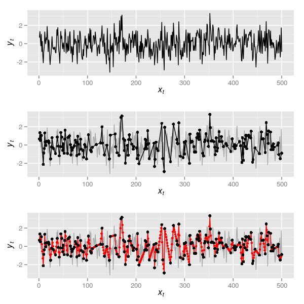
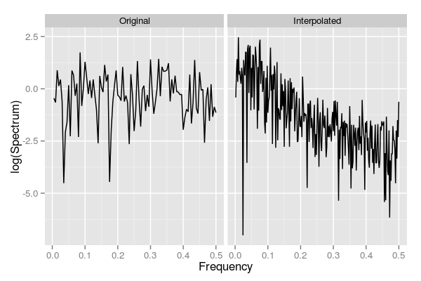
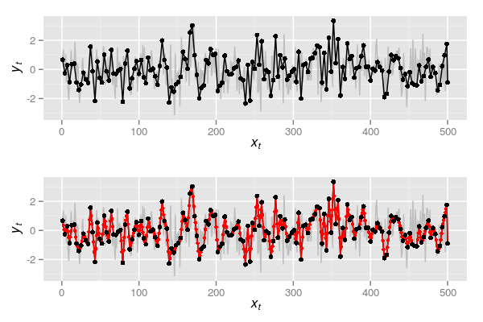
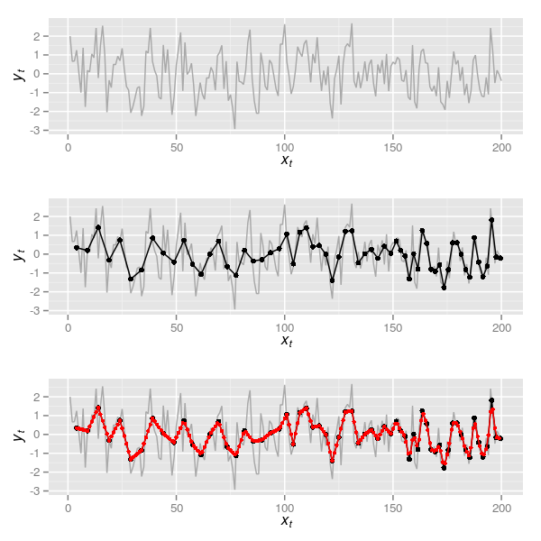
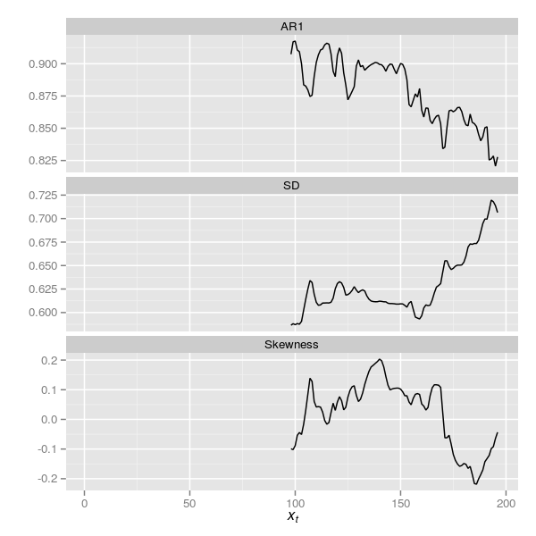
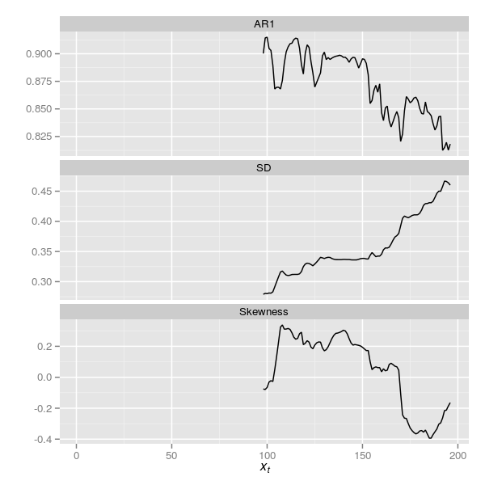

Flickering diatoms?
Posted in
Tagged
Blogroll
Last year, Rong Wang and colleagues (Wang et al., 2012) published a very nice paper in Nature, which claimed to have observed flickering, an early warning indicator of an approaching critical transition, in a diatom sediment sequence from Erhai Lake, Yunnan, China. What was particularly pleasing about this paper was that the authors had tried to use the sediment record to investigate whether we see signs of early warning indicators prior to a transition between stable states. It was refreshing to not see a transfer function!
I always had my doubts about the way the authors had handled the data — sediments are tricky things to work with because unless you are very lucky and have an annually varved sequenced then the observations on that sediment are
- unevenly spaced in time
- each sample represents a different amount of time, with older samples tending to be a combination of more “time” than younger samples through compaction, and in the case of Erhai Lake, increases in sediment accumulation resulting from eutrophication.
To get around the uneven sampling, Wang et al. (2012) interpolated the observations to annual resolution. This is never a good thing to do as it changes the properties of the time series; you are making data up when you interpolate! This is particularly concerning when the properties of the series that are being investigated are related to the variance and autocorrelation of the series.
Another issue I had was that the authors had decomposed the multivariate diatom proxy data into a single DCA axis. Apart from the horrible things that DCA does to the data, I always thought that this was making the authors’ lives difficult because DCA extracts the main pattern (subject to some criteria) of variance in the data. Here by variance I mean the main “feature” in the data, i.e. a gradient that best separates the species optima subject to some conditions. Would we expect these features, these so-called early-warning indicators, to be associated with the first DCA axis scores? I suspected that some of the signal that Wang et al. (2012) were trying to identify was probably split off in other dimensions of the DCA that were not analysed.
I’m not sure myself what we can do with such high-dimensional data as diatom proxy records — there are generally too many taxa present in a typical sequence to model them all as a multivariate time-series model and even if we take only the most common taxa that issue may still hold.
Last week Jacob Carstensen and colleagues (Carstensen et al., 2013) had a reply to Wang et al. (2012) published in Nature, which essentially deals with issue 1 and 2 from the list above. Carstensen et al. (2013) show that results similar to those of Wang et al. (2012) could be observed in a null model data set subjected to the same numerical treatment that Wang et al. (2012) applied to their data. Let’s be clear here, what Carstensen et al. (2013) showed was that in data that didn’t have early-warning indicators the very act of interpolating aggregate sediment core data resulted in increased variance, and decreased skewness and lag-1 autocorrelation. Some of the resaults Wang et al. (2012) reported as evidence of flickering could have been induced in the data by the processing steps the authors’ used.
This isn’t, by any means, the sum of the evidence Wang et al. (2012) report, but it is the main evidence in support of their claims.
Here I want to illustrate using R what Carstensen et al. (2013) show. To do so, we’ll start with a slightly autocorrelated sequence of observations that will play the role of the DCA residuals analysed by Wang et al. (2012) and Carstensen et al. (2013).
require("zoo") ## for rolling window
require("moments") ## for skewness
require("ggplot2") ## for plotting
require("reshape2") ## for easy data reshaping
require("grid") ## for laying out figures
set.seed(13)
dat <- data.frame(yt = as.numeric(arima.sim(list(ar = 0.2), n = 500)),
xt = seq_len(500))
## plot the data
p1 <- ggplot(dat, aes(x = xt, y = yt)) +
geom_line() +
ylab(expression(italic(y[t]))) +
xlab(expression(italic(x[t])))
p1arima.sim() does the hard work here, namely producing an AR(1) with \( \rho \) = 0.2. Throughout, I’ll use xt as the time point and yt as the value of the series at time xt. The resulting plot is the upper panel in Figure 1.

The data in the uppermost panel of Figure 1 is a realisation of what we might have observed at an annual time step if we could resolve this from the sediments annually. Now, naively presume that the way we sample such a series is just to see some of these observations at random, say 200 of them. This can be simulated in R via
set.seed(32)
N <- 200
obs <- dat[sort(c(1, sample(2:499, N-2), 500)), ]
## plot the data
p2 <- ggplot(dat, aes(x = xt, y = yt)) +
geom_line(colour = "darkgrey") +
geom_line(data = obs) +
geom_point(data = obs) +
ylab(expression(italic(y[t]))) +
xlab(expression(italic(x[t])))
p2which is the series in black shown in the middle panel of Figure 1. Note that to simplify matters I keep the first and the last observation and sample 198 of the remaining 498 observations. This series is unevenly sampled in time so we can do as Wang et al. (2012) did and apply a linear interpolation. In R this is most easily done with functions approx() or, more usefully, approxfun(). The latter returns a function that for given xt return the interpolated yt. In the code below I first create the interpolation function by supplying approxfun() with the 200 randomly selected time points in obs. Then I use this function to give interpolated values at each time point of the true data (1:500)
fun <- with(obs, approxfun(xt, yt))
dat2 <- with(obs, data.frame(yt = fun(seq_len(500)),
xt = seq_len(500)))
## plot the data
p3 <- ggplot(dat, aes(x = xt, y = yt)) +
geom_line(colour = "darkgrey") +
geom_line(data = dat2, colour = "red") +
geom_point(data = dat2, colour = "red", size = 1.5) +
geom_point(data = obs) +
ylab(expression(italic(y[t]))) +
xlab(expression(italic(x[t])))
p3The interpolated series is shown in the lowermost panel of Figure 1 in red, the large black points illustrating the 200 samples between which the interpolation took place. Now we have this, it is time to do something useful with the series.
It is well known (for example Schulz and Stattegger, 1997) that interpolation alters the spectral properties of a time series; the interpolated series exhibits a higher degree of autocorrelation - its spectral density is shifted to the red (low frequency) end of the spectrum. For the example data set, the code below compares the spectra for the original and the interpolated series
## compute the spectra for each series
s1 <- with(obs, spectrum(yt, method = "pgram", plot = FALSE))
s2 <- with(dat2, spectrum(yt, method = "pgram", plot = FALSE))
## form data for the plot
specs <- data.frame(Frequency = c(s1$freq, s2$freq),
Spectrum = c(s1$spec, s2$spec),
Type = factor(rep(c("Original","Interpolated"),
time = c(length(s1$spec), length(s2$spec))),
levels = c("Original","Interpolated")))
## plot
specPlt <- ggplot(data = specs,
aes(x = Frequency, y = log(Spectrum))) +
geom_line() +
facet_wrap( ~ Type, ncol = 2)
specPltThe resulting figure is shown below

Note how the original series has similar contributions across the frequency range, which is indicative of how these data were generated, whilst the interpolated series is strongly shifted to the red end of the spectrum. More formally, we can fit AR(1) models to both series and look at the estimate of the AR coefficient
> (m1 <- with(dat, ar(yt, order.max = 1)))
Call:
ar(x = yt, order.max = 1)
Coefficients:
1
0.2111
Order selected 1 sigma^2 estimated as 1.097
> (m2 <- with(dat2, ar(yt, order.max = 1)))
Call:
ar(x = yt, order.max = 1)
Coefficients:
1
0.7393
Order selected 1 sigma^2 estimated as 0.4014
Again we note that interpolation has induced a significant degree of auto-correlation into the series.
The same pattern is observed if we simulate observing the series every three samples and then interpolate it back to annual resolution.
## Observing every third sample - but include first and last observation
## so data covers range of observed
obs2 <- dat[c(seq(1, 500, by = 3), 500), ]
plot(yt ~ xt, data = dat, type = "l", col = "grey")
p4 <- ggplot(dat, aes(x = xt, y= yt)) +
geom_line(colour = "grey") +
geom_line(data = obs2) +
geom_point(data = obs2) +
ylab(expression(italic(y[t]))) +
xlab(expression(italic(x[t])))
p4
fun2 <- with(obs2, approxfun(xt, yt))
dat3 <- with(obs2, data.frame(yt = fun2(seq_len(500)),
xt = seq_len(500)))
p5 <- p4 + geom_line(data = dat3, colour = "red") +
geom_point(data = dat3, colour = "red", size = 1.5) +
geom_point(data = obs2) ## observations
p5
s3 <- with(obs2, spectrum(yt, method = "pgram", plot = FALSE))
s4 <- with(dat3, spectrum(yt, method = "pgram", plot = FALSE))
specs2 <- data.frame(Frequency = c(s3$freq, s4$freq),
Spectrum = c(s3$spec, s4$spec),
Type = factor(rep(c("Original","Interpolated"),
times = c(length(s3$spec), length(s4$spec))),
levels = c("Original","Interpolated")))
specPlt2 <- ggplot(data = specs2,
aes(x = Frequency, y = log(Spectrum))) +
geom_line() +
facet_wrap( ~ Type, ncol = 2)
specPlt2
m3 <- with(dat3, ar(yt, order.max = 1))Plots p4 and p5 are shown together in Figure 3 below

and spectra for the observed and interpolated series based on every three samples being observed are shown below
This time, even greater autocorrelation has been induced — note the AR(1) coefficient in the output below
> m3
Call:
ar(x = yt, order.max = 1)
Coefficients:
1
0.8635
Order selected 1 sigma^2 estimated as 0.218
Such has the spectrum been altered, the best fitting AR(p) model is an AR(17) for this interpolated series compared with an AR(1) for the original series
> with(dat3, ar(yt))
Call:
ar(x = yt)
Coefficients:
1 2 3 4 5 6 7 8
1.4329 -0.4413 -0.6537 0.7749 -0.1581 -0.1846 0.0866 0.0249
9 10 11 12 13 14 15 16
-0.0927 0.0906 -0.0653 0.0220 0.0282 -0.0813 -0.1330 0.2728
17
-0.1016
Order selected 17 sigma^2 estimated as 0.1083
The simulations above were crude as they only demonstrate what happens when a series is interpolated. These were used to illustrate the basic point that interpolation is not a good thing to do if you are interested in the spectral properties of the data. I would go further however and say that interpolating a time series is never the right thing to do. One is really making up data when using interpolation. My main issue with interpolation in general is that when you interpolate a time series you are assuming that the observed series is the signal observed without noise! This is clearly preposterous! Simplistically we might consider a time series to be comprised of a signal and some noise
\[ y_t = \mathrm{signal}_t + \mathrm{noise}_t \]
The linear interpolation used here assumes that between observations, the system behaves deterministically and transitions between \( x_{t-1} \) and \( x_{t} \) in a straight line. In the case of Wang et al. (2012), the authors’ removed the trend in the data first and work with the residuals from this trend fitting. In this situation the residuals are assumed to be random noise but the interpolation assumes that the noise varies in a deterministic fashion between observations; in other words the degree of noise transitions smoothly from \( x_{t-1} \) and \( x_{t} \). That is far to optimistic.
A more realistic simulation
As I said, the simulations above were simplistic. Now I will do a more complex simulation which illustrates the effect of interpolation and the aggregating effect of time in older samples. For this I will still make some simplifying assumptions, namely that in a series of 200 observations, the aggregation in the samples changes abruptly, with approximately the first 50 samples being averaged in 5-sample intervals, the next 50 samples in 4-sample intervals, and so on such that the final 50 observations being an average over 2-sample intervals. In a real system the accumulation rate may well be varying all the time and compaction of the sediments may not act so linearly as this example, but it is a reasonable simulation.
I begin by simulating the true series for this example, 200 observations from an AR(1) with \( \rho \) = 0.4 and plot the series. The upper panel in Figure 5 shows the true series.
N <- 200
xt <- seq_len(N)
set.seed(2)
yt <- as.numeric(arima.sim(list(ar = 0.4), n = N))
eg <- ggplot(data.frame(xt = xt, yt = yt), aes(x = xt, y = yt)) +
geom_line(colour = "darkgrey") +
ylab(expression(italic(y[t]))) +
xlab(expression(italic(x[t])))
eg
Next we need to simulate the aggregating process of lake sediments. For this I split the data into roughly equal chunks of approximately 50 samples each (note these are not exactly 50 samples to make the aggregating step easier).
spl <- split(data.frame(cbind(yt, xt)[-1, ]),
rep(1:4, times = c(50,48,51,50)))spl now contains the chunks of the time series. To each chunk we need a function that will average the samples in each chunk over the correct sample window. The function below implements this, with aggregate() doing the hard work and the preceding lines simply creating the correct windows to aggregate over. Recall the window widths will be 5, 4, 3, and 2 respectively for the four chunks of the time series.
aggFun <- function(i, dfs, width) {
dat <- dfs[[i]]
wd <- width[[i]]
ngrp <- nrow(dat) %/% wd
dat <- cbind(dat, group = rep(seq_len(ngrp), each = wd))
agg <- aggregate(cbind(xt, yt) ~ group, data = dat, FUN = mean)
agg
}lapply() on the indices of spl (ie 1, 2, 3, 4 from seq_along(spl)) is used to apply aggFun to each chunk in turn. do.call() is used to combine, row-wise, the resulting aggregated sections into a new series core
core <- do.call(rbind, lapply(seq_along(spl), aggFun, spl, 5:2))It is worth pointing out that the time point associated with each aggregated sample is also a mean of the time points that went into computing the average over the window width. In other words, each simulated sediment slice takes the average age xt of the ages of the true time series samples aggregated in each slice. A plot of the resulting time series is shown in the middle panel of Figure 5 and was created via
eg2 <- eg +
geom_line(data = core) +
geom_point(data = core, size = 2)
eg2Now we are ready to do the real work; follow Wang et al. (2012) and interpolate the aggregated series
## interpolate
intFun <- with(core, approxfun(xt, yt))
corei <- data.frame(xt = 4:199, yt = intFun(4:199))corei now contains a new series interpolated to an annual time step based on the aggregated data from core. The interpolated series is shown in the lowermost panel of Figure 5, which was produced using
eg3 <- eg2 +
geom_line(data = corei, colour = "red") +
geom_point(data = corei, colour = "red", size = 1.5)
eg3I skip the spectral analysis and jump straight to fitting an AR(1) to the true series and the aggregated and interpolated series
> (spec0 <- ar(yt, order.max = 1))
Call:
ar(x = yt, order.max = 1)
Coefficients:
1
0.3486
Order selected 1 sigma^2 estimated as 1.184
> (spec1 <- with(corei, ar(yt, order.max = 1)))
Call:
ar(x = yt, order.max = 1)
Coefficients:
1
0.8678
Order selected 1 sigma^2 estimated as 0.1043
Notice again how the aggregated and interpolated series is more autocorrelated than the original, true series.
Wang et al. (2012) consider several measures of early warnings, including the standard deviation (SD), the skewness and the AR(1) coefficient. If we compare these across the true series, the aggregated one and the interpolated series we see substantial differences where none should occur as the underlying data were simulated without such changes.
| Measure | Raw | Agg. | Interpl. |
|---|---|---|---|
| SD | 1.158 | 0.802 | 0.648 |
| Skewness | 0.027 | 0.086 | -0.041 |
| AR(1) | 0.349 | NA | 0.868 |
Note that aggregation alone causes some changes in the SD and skew of the series. The AR(1) can’t be estimated given the uneven sampling interval although we could estimate something similar via a continuous-time AR(1), but we’ll leave that for another day. Interpolating the series changes the properties of the series again. The values in the table can be computed using the code below.
tab <- rbind(SD = c(sd(yt), with(core, sd(yt)), with(corei, sd(yt))),
AR1 = c(spec0$ar, NA, spec1$ar))
colnames(tab) <- c("Raw", "Agg.", "Interpl.")
print(tab, digits = 2)One of the techniques commonly used in the analysis of early warning indicators is a rolling window approach to apply the summary statistics above to rolling windows of a series. Often the window size is chosen to be approximately half the length of the time series, with the window right-aligned such that we have to observe half the series before a statistic can be computed. The zoo package contains convenient functions for doing this analysis. First we need a simple wrapper function ar1Fun() to compute the AR(1) coefficient
ar1Fun <- function(yt) {
ar(yt, order.max = 1)$ar
}and the interpolated series needs to be converted to a zoo series
zcorei <- with(corei, zoo(yt, order.by = xt))Below the rollapply() function is used to apply ar1Fun(), sd() and skewness() to rolling windows with window width the largest integer that is less than half the series in length (note the aggregation steps above lead to only 196 samples remaining in the series).
ar1i <- rollapply(zcorei, width = floor(nrow(corei)/2), align = "right",
fill = NA, FUN = ar1Fun)
sdi <- rollapply(zcorei, width = floor(nrow(corei)/2), align = "right",
fill = NA, FUN = sd)
skewi <- rollapply(zcorei, width = floor(nrow(corei)/2), align = "right",
fill = NA, FUN = skewness)The resulting early warning indicators are best viewed as time series, which can be achieved by the following code that binds column-wise the three indicators and melt()s the resulting data frame into a format suitable for plotting with ggplot
ewind <- melt(data.frame(cbind(AR1 = as.numeric(ar1i),
SD = as.numeric(sdi),
Skewness = as.numeric(skewi))))
ewind <- cbind(ewind, xt = rep(seq_along(ar1i), 3))
plt <- ggplot(ewind, aes(x = xt, y = value)) +
geom_line() +
facet_wrap( ~ variable, ncol = 1, scales = "free_y") +
ylab("") +
xlab(expression(italic(x[t])))
pltThe resulting plot is shown below in Figure 6

Carstensen et al. (2013) reanalysed the DCA data of Wang et al. (2012) by standardising the residuals from their detrending step using the square root of the aggregation interval. Note: actually, Carstensen et al. (2013) didn’t quite do this; see the comment by Richard Telford. As the series here were generated without a trend, detrending was not required, but we can still apply the standardisation used by Carstensen et al. (2013) via a simple modification of the aggregating function and re-running some code
aggFun2 <- function(i, dfs, width, std = FALSE) {
dat <- dfs[[i]]
wd <- width[[i]]
ngrp <- nrow(dat) %/% wd
dat <- cbind(dat, group = rep(seq_len(ngrp), each = wd))
agg <- aggregate(cbind(xt, yt) ~ group, data = dat, FUN = mean)
if(std)
agg$yt <- agg$yt / sqrt(wd) ## standardise
agg
}
core2 <- do.call(rbind, lapply(seq_along(spl),
aggFun2, spl, 5:2, std = TRUE))
intFun2 <- with(core2, approxfun(xt, yt))
corei2 <- data.frame(xt = 4:199, yt = intFun2(4:199))
zcorei2 <- with(corei2, zoo(yt, order.by = xt))
ar1i2 <- rollapply(zcorei2, width = floor(nrow(corei)/2), align = "right",
fill = NA, FUN = ar1Fun)
sdi2 <- rollapply(zcorei2, width = floor(nrow(corei)/2), align = "right",
fill = NA, FUN = sd)
skewi2 <- rollapply(zcorei2, width = floor(nrow(corei)/2), align = "right",
fill = NA, FUN = skewness)
ewind2 <- melt(data.frame(cbind(AR1 = as.numeric(ar1i2),
SD = as.numeric(sdi2),
Skewness = as.numeric(skewi2))))
ewind2 <- cbind(ewind2, xt = rep(seq_along(ar1i2), 3))
plt2 <- ggplot(ewind2, aes(x = xt, y = value)) +
geom_line() +
facet_wrap( ~ variable, ncol = 1, scales = "free_y") +
ylab("") +
xlab(expression(italic(x[t])))
plt2The resulting plot is shown below in Figure 7

The plots are superficially similar although the trace for the SD indicator has changed somewhat.
There are several other issues that Carstensen et al. (2013) identify, several of which are covered in more detail by Richard Telford on his blog, from which I judiciously stole a couple of ideas for this posting!
The resulting reply from Wang et al. (2012) to the critique of Carstensen et al. (2013) was somewhat disappointing, with little of real substance offered by way of mitigation of the holes poked in their results. But that is the way so much these days with many journals. I do wish a real debate could be entered into on these topics; perhaps, as was suggested by a follower on Twitter, blog posts such as this and Richard’s serve that purpose.
So where do we stand with regards to early warning indicators and diatoms? At best there is weak evidence of some indicators in the Erhai Lake data. The main outcome of this work is probably to have stimulated some interest in actually trying to confront an interesting theoretical question with palaeo data. Our science could do a lot worse than have more of these studies being conducted, and not just testing the theoretical models underpinning critical transitions.
Another clear outcome is that we really do need to develop better ways to handle sediment core data in statistical analyses. Oh yes, and we probably shoudln’t be interpolating such data.
Social